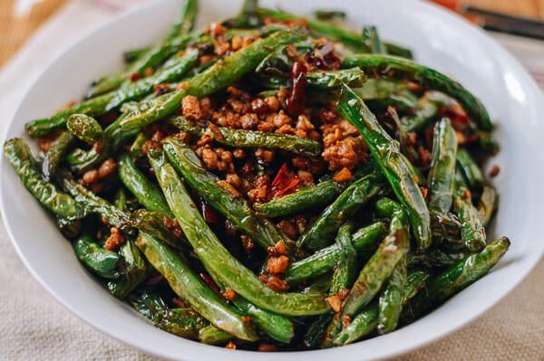

Sichuan style
Sichuan-style Dry (Fried) Green Beans is probably my favorite Chinese dish. It's simple to make and checks off everything you want from a Sichuan dish -- dry, slightly numbing, and a decent balance of meat and vegetables.
This version of the recipe will include pork and Sichuan peppercorn.